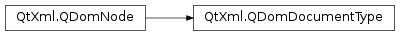

QDomDocumentType¶
Synopsis¶
Detailed Description¶
The
PySide2.QtXml.QDomDocumentTypeclass is the representation of the DTD in the document tree.The
PySide2.QtXml.QDomDocumentTypeclass allows read-only access to some of the data structures in the DTD: it can return a map of allPySide2.QtXml.QDomDocumentType.entities()andPySide2.QtXml.QDomDocumentType.notations(). In addition the functionPySide2.QtXml.QDomDocumentType.name()returns the name of the document type as specified in the <!DOCTYPE name> tag. This class also provides thePySide2.QtXml.QDomDocumentType.publicId(),PySide2.QtXml.QDomDocumentType.systemId()andPySide2.QtXml.QDomDocumentType.internalSubset()functions.See also
-
class
PySide2.QtXml.QDomDocumentType¶ -
class
PySide2.QtXml.QDomDocumentType(x) Parameters: x – PySide2.QtXml.QDomDocumentTypeCreates an empty
PySide2.QtXml.QDomDocumentTypeobject.Constructs a copy of
n.The data of the copy is shared (shallow copy): modifying one node will also change the other. If you want to make a deep copy, use
PySide2.QtXml.QDomNode.cloneNode().
-
PySide2.QtXml.QDomDocumentType.entities()¶ Return type: PySide2.QtXml.QDomNamedNodeMapReturns a map of all entities described in the DTD.
-
PySide2.QtXml.QDomDocumentType.internalSubset()¶ Return type: unicode Returns the internal subset of the document type or an empty string if there is no internal subset.
-
PySide2.QtXml.QDomDocumentType.name()¶ Return type: unicode Returns the name of the document type as specified in the <!DOCTYPE name> tag.
See also
-
PySide2.QtXml.QDomDocumentType.notations()¶ Return type: PySide2.QtXml.QDomNamedNodeMapReturns a map of all notations described in the DTD.
-
PySide2.QtXml.QDomDocumentType.publicId()¶ Return type: unicode Returns the public identifier of the external DTD subset or an empty string if there is no public identifier.
-
PySide2.QtXml.QDomDocumentType.systemId()¶ Return type: unicode Returns the system identifier of the external DTD subset or an empty string if there is no system identifier.
© 2018 The Qt Company Ltd. Documentation contributions included herein are the copyrights of their respective owners. The documentation provided herein is licensed under the terms of the GNU Free Documentation License version 1.3 as published by the Free Software Foundation. Qt and respective logos are trademarks of The Qt Company Ltd. in Finland and/or other countries worldwide. All other trademarks are property of their respective owners.